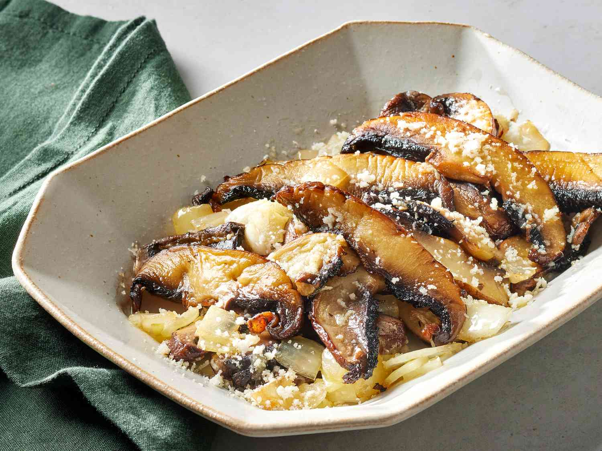

Portobelo Mushroom Sauté
Home

Learn how to cook portobello mushrooms with this quick and easy portobello mushroom recipe. You can substitute shallots for the onions if you wish. My family loves this recipe, it tastes so good!.
Ingredients
- 3 tablespoons olive oil, divided, or more as needed
- 1 ½ tablespoons garlic flavored olive oil
-
- ¼ onion, cut into chunks
- 2 portobello mushroom caps, sliced
-
- salt and black pepper to taste
- freshly grated Parmesan
- freshly grated Asiago cheese
Steps
- Gather the ingredients.
- Warm 1 1/2 tablespoons olive oil and garlic-flavored olive oil together in a skillet over medium heat until fragrant, about 1 minute. Stir in onions and mushrooms; reduce heat to low, and cook until the mixture has softened and caramelized, with browning around the edges, 8 to 12 minutes, adding additional olive oil if needed to prevent sticking.
- Turn off heat, drizzle with remaining 1 1/2 tablespoons olive oil, and season with salt and pepper. Sprinkle generously with Parmesan and Asiago cheeses.